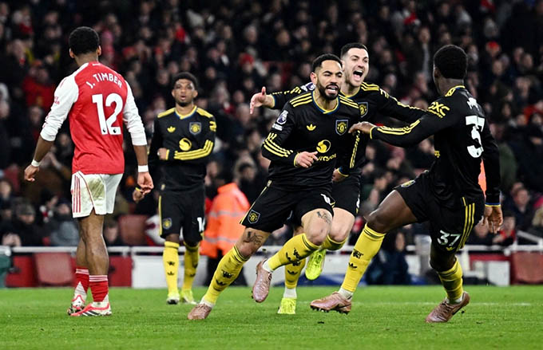
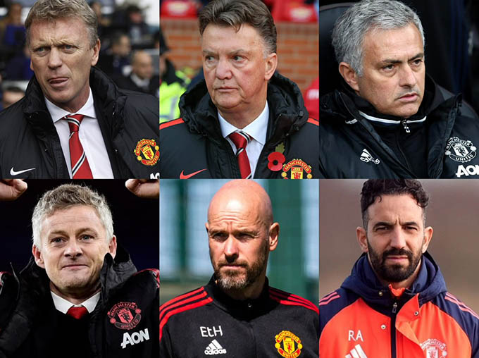
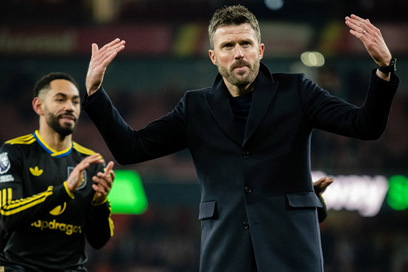

Tôi là Hoàng, một fan MU kiểu… không bỏ được. 13 năm qua, người ta hỏi tôi một câu quen như cơm bữa: Sao MU nát thế? Tôi cũng tự hỏi chính mình câu đó, nhiều hơn bất kỳ ai. Và sau trận Super Sunday, khi MU thắng Arsenal 3-2 ngay tại Emirates, cộng thêm chiến thắng 2-0 trước Man City ở derby Manchester, tôi tin đã đến lúc phải nói thẳng: nguyên nhân khiến MU lụn bại suốt 13 năm qua không nằm ở cầu thủ, mà nằm ở cách CLB tự làm khó chính mình.

MU xuất sắc hạ Arsenal ngay tại EmiratesChiến thắng trước Arsenal không phải kết quả của may mắn. Đó là hơn 90 phút mà MU chơi có tổ chức, bản lĩnh và cá tính. Trước Man City cũng vậy. Hai đối thủ thuộc dạng “khó chịu nhất châu Âu”, vậy mà MU không hề lép vế. Điều đó nói lên một điều rất rõ: chất lượng đội hình của MU hiện tại không hề tệ. Thậm chí, nếu công bằng mà nói, MU không thiếu ngôi sao, không thiếu chiều sâu, cũng chẳng thiếu kinh nghiệm thi đấu đỉnh cao.
Vậy vấn đề là gì? Vấn đề nằm ở 13 năm lạc lối sau ngày Sir Alex Ferguson rời đi. Sir Alex không chỉ là HLV. Ông là kiến trúc sư, nhà quản trị, người giữ bản sắc. Khi ông ra đi, MU mất luôn chiếc la bàn định hướng. Thay vì xây dựng một kế hoạch dài hạn, CLB rơi vào vòng xoáy vá víu, sửa sai, đập đi làm lại. Mỗi đời HLV là một triết lý khác nhau, kéo theo những bản hợp đồng phục vụ cho… nhiệm kỳ, chứ không phải cho tương lai.

Nửa tá HLV tài danh đến rồi rời MU trong thất bạiDavid Moyes đến với di sản quá lớn. Van Gaal mang triết lý kiểm soát nhưng thiếu linh hồn. Mourinho đem về danh hiệu nhưng để lại phòng thay đồ rạn nứt. Solskjaer cố gắng khơi dậy DNA MU nhưng thiếu sự hậu thuẫn chiến lược. Ten Hag khởi đầu đầy hy vọng rồi dần bị chính hệ thống làm cho kiệt quệ. Và Ruben Amorim cũng phải ra đi khi mọi thứ chưa kịp định hình.
MU không thất bại vì chọn sai HLV. MU thất bại vì không bảo vệ HLV khỏi chính sự hỗn loạn bên trong CLB. 13 năm qua, MU mua cầu thủ theo kiểu “thấy ai hay thì mua”, “đối thủ có thì mình cũng cần”, hơn là dựa trên một cấu trúc chiến thuật rõ ràng. Những bản hợp đồng đắt giá đến rồi đi, để lại một đội hình chắp vá, thiếu liên kết, thiếu sự kế thừa. Có thời điểm, MU sở hữu những cá nhân rất tốt, nhưng lại không phải là một tập thể đúng nghĩa.
Và đó là lý do vì sao hai chiến thắng trước Arsenal và Man City khiến tôi… vừa vui, vừa chạnh lòng. Vui vì MU vẫn còn đó bản lĩnh của một đội bóng lớn. Vui vì khi tâm lý được giải phóng, khi cầu thủ được đặt đúng vai trò, MU hoàn toàn có thể chơi sòng phẳng với bất kỳ ai. Nhưng chạnh lòng vì nó chứng minh một điều đau đớn: MU không hề yếu như người ta tưởng. MU chỉ bị quản lý tệ trong suốt hơn một thập kỷ. 13 năm lụn bại không phải vì MU thiếu tiền. Cũng không phải vì MU thiếu tài năng. Mà vì CLB đánh mất sự kiên nhẫn và bản sắc. Người ta đòi hỏi thành công ngay lập tức, trong khi bóng đá hiện đại cần thời gian, cấu trúc và niềm tin. MU thì luôn thay đổi khi mọi thứ chưa kịp chín.

Nửa tá HLV tài danh đến rồi rời MU trong thất bạiGiờ đây, khi những dư âm nặng nề vì cuộc chia tay với Ruben Amorim đã ở lại phía sau, tôi hy vọng ban lãnh đạo MU sẽ hiểu rằng: việc vực dậy Quỷ đỏ chưa bao giờ là nhiệm vụ bất khả thi. Điều khó nhất không phải thắng Arsenal hay Man City, mà là thắng sự hấp tấp của chính mình.
Là một fan MU, tôi không cần những lời hứa hẹn hoa mỹ. Tôi chỉ cần thấy CLB này đi đúng hướng, dù chậm. Bởi MU không cần phép màu. MU chỉ cần được làm bóng đá… như một CLB bóng đá đúng nghĩa. 13 năm qua là một bài học quá đắt. Hy vọng lần này, MU chịu học.